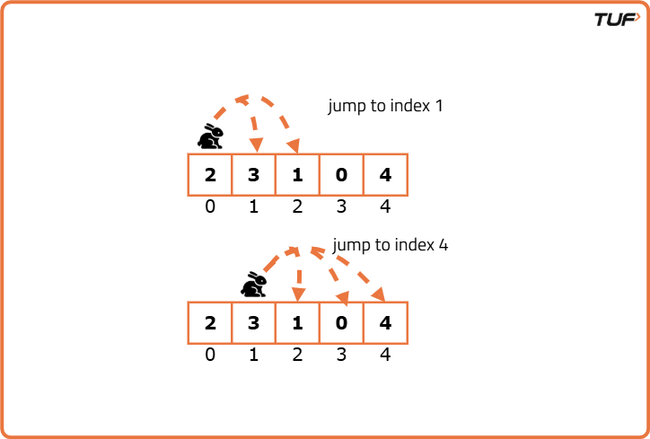
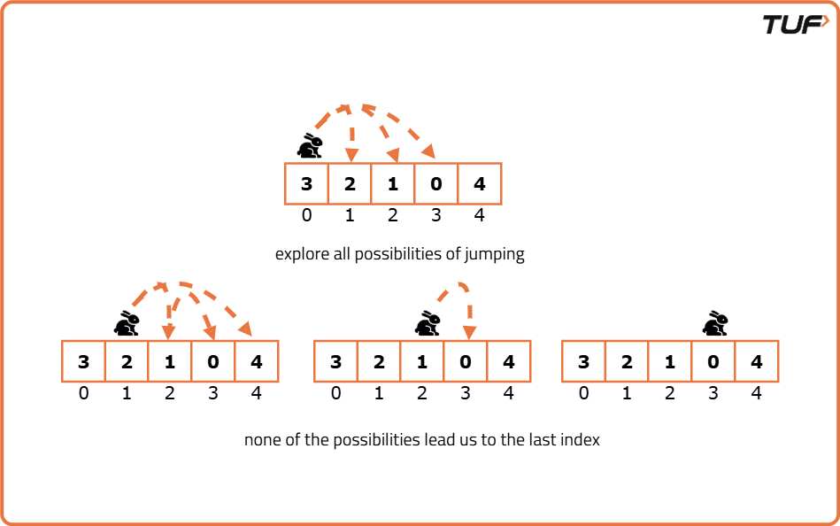
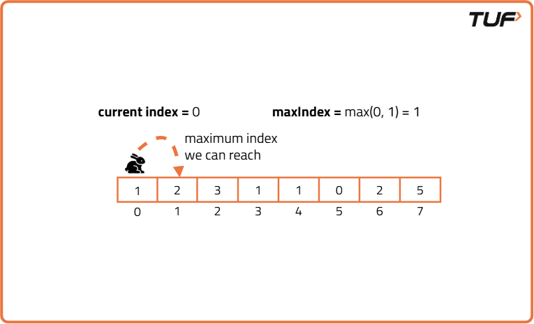
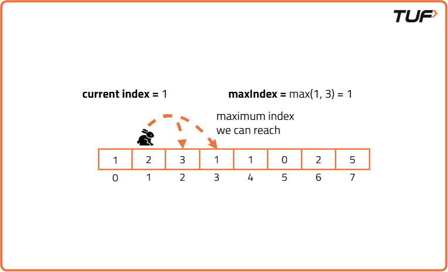
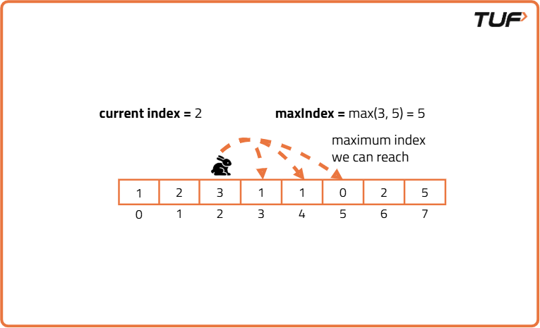
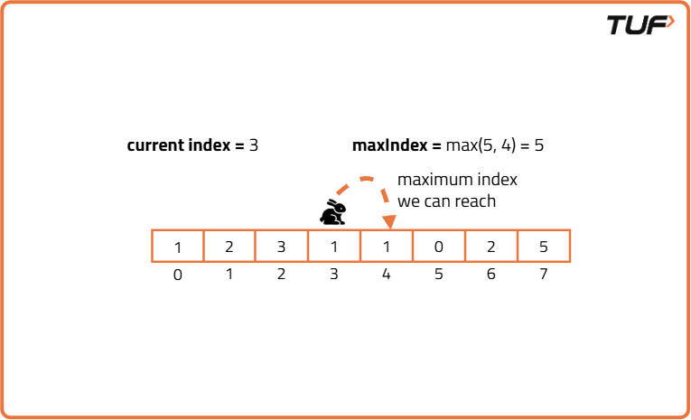
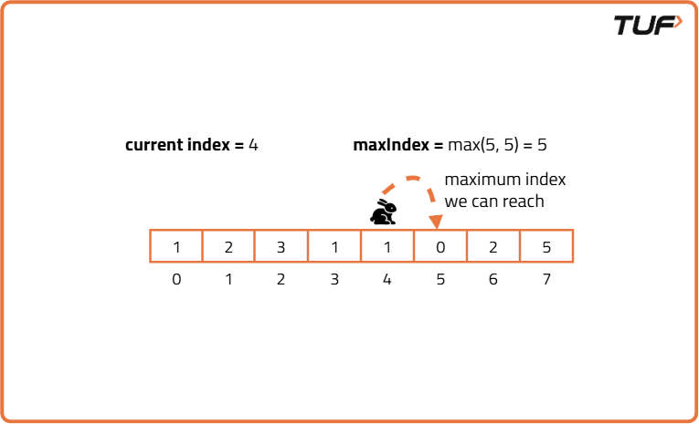
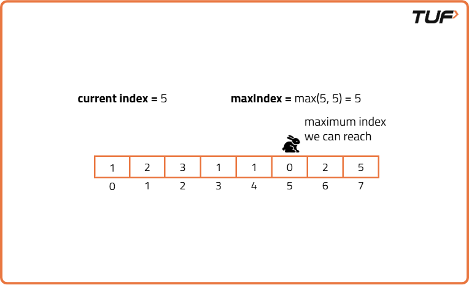
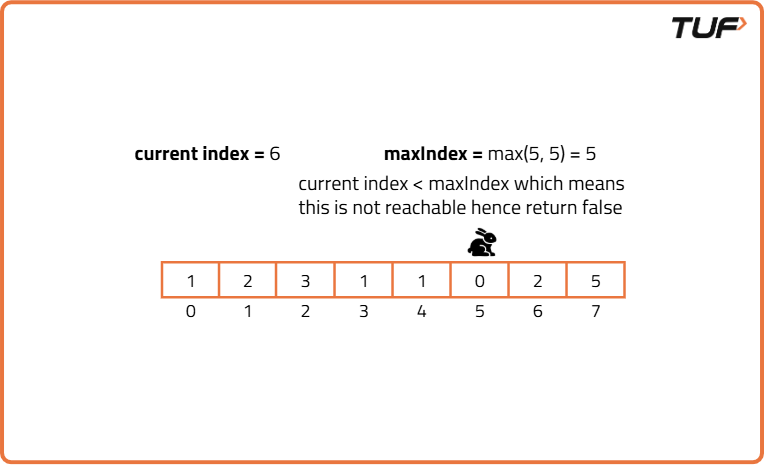

Jump Game - I
Problem Statement: Given an array where each element represents the maximum number of steps you can jump forward from that element, return true if we can reach the last index starting from the first index. Otherwise, return false.
Examples
Example 1: Input:nums = [2, 3, 1, 0, 4] Output: True Explanation: We start at index 0, with value 2 this means we can jump to index 1 or 2. From index 1, with value 3, we can jump to index 2, 3, or 4. However, if we jump to index 2 with value 1, we can only jump to index 3. So we jump to index 1 then index 4 reaching the end of the array. Hence, we return true.
Example 2: Input:nums = [3, 2, 1, 0, 4] Output: False Explanation: We start at index 0, with value 3 which means we can jump to index 1, 2, or 3. From index 1, with value 2 we can only jump to index 2 or 3. From index 2, with value 1 we can only jump to index 3. From index 3, with value 0 we cannot jump any further. Hence, from all possibilities we are unable to jump to the last index so we return false.
Disclaimer: Here is the practice link to help you assess your knowledge better. It's highly recommend trying to solve it before looking at the solution.
Approach
Algorithm
- Initialise a variable maxIndex to keep track of the farthest index we can reach from the start
- Iterate through each index of the array and at each interaction check if the current index is greater than the maximum index we can reach so far.
- If the current index is greater than maxIndex, it means the current index is not reachable hence we return false.
- But if current index is reachable we update the maxIndex to be the maximum of the current value of maxIndex and maximum index we can reach from current index ie. i + nums[i].
- If we exit the loop without returning false, it means we have reached the last index, therefore we can return a true.
Dry Run







Code
#include <vector>
using namespace std;
// Class to solve the Jump Game problem
class JumpGame {
public:
// Function to determine if you can reach the last index
bool canJump(vector<int>& nums) {
int maxIndex = 0; // The farthest index we can currently reach
// Traverse the array
for (int i = 0; i < nums.size(); i++) {
// If current index is beyond the farthest reachable point
if (i > maxIndex) {
return false; // We cannot move further
}
// Update the farthest index we can reach
maxIndex = max(maxIndex, i + nums[i]);
}
// If we finish the loop, we can reach the last index
return true;
}
};
int main() {
vector<int> nums = {4, 3, 7, 1, 2};
cout << "Array representing maximum jump from each index: ";
for (int val : nums) cout << val << " ";
cout << endl;
JumpGame game;
bool ans = game.canJump(nums);
if (ans)
cout << "It is possible to reach the last index." << endl;
else
cout << "It is not possible to reach the last index." << endl;
return 0;
}
Complexity Analysis
Time Complexity: O(N) where N is the length of the input array. We iterate through the input array exactly once and at each element perform constant time operations.
Space Complexity: O(1) as the algorithm uses only a constant amount of extra space regardless of the size of the input array. It does not require any additional data structures that scale with the input size.